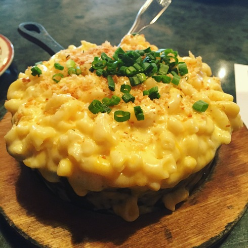

Vegan Buffalo Mac 'N Cheese

Vegan mac n cheese with buffalo sauce, tempeh, and cashew "cheese"
This is a delicious recipe that is great for everyone. It's dank.
- Cashews
- Spices
- Avocado
- Onion
- Nutritional yeast
- Garlic
- Macaroni Pasta
- Buffalo Tempeh
- Soak Cashews in water for at least 3 hours. Drian water and add to food processor.
- Add Spices, nutrional yeast, avacado to food processor and blend.
- Saute tempeh until browned, saute onions until translucent, add garlic and saute for a minute
- Boil water and cook macaroni. Drain.
- Combine sauce with tempeh, onion, garlic and sauce. Add buffalo sauce